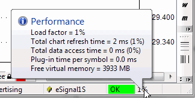

Performance tuning tips
AmiBroker is one of the fastest (if not the fastest) technical analysis programs.
Still, the user, by applying incorrect settings, poor formula coding, and other
suboptimal choices, can significantly slow it down. In this short chapter, we will
give a few hints on how to make the program perform as it was originally designed
to.
There are three areas of performance tuning:
- Operating system / machine level
- AmiBroker settings level
- Formula coding
At the operating system level, you should do the following:
- Avoid installing unnecessary third-party programs
Specifically, avoid all kinds of "memory turbo," "Windows optimizers," "Windows
cleaners," and similar tools, as they only bring more load to the CPU and system
resources and provide zero or virtually no benefit. What is worse, they
could affect the normal operation of Windows and cause compatibility problems.
- Turn OFF virus checking for DATA files
Many antivirus programs turn on so-called "live" protection for all files on all
disks. This will bring system performance to its knees. Why? Simply because
the antivirus will intercept each and every file access and run its extensive
checking on each data access. This could result in a drastic slowdown of file
accesses to the extent that Windows boots three times slower than normal.
See the following article
http://www.thepcspy.com/read/what_really_slows_windows_down/5 that
shows some real measurements on the impact of antivirus.
While I am not saying to turn off antivirus completely, it is strongly
recommended to turn OFF antivirus checking on DATA
FILES, specifically on all data files inside the AmiBroker folder. Generally
speaking, there are two kinds of files: executable (.exe, .dll, .ocx) and data
files (.txt, .html, .wav, .jpg, .gif, .chm, etc...). Checking data files for
viruses actually makes very little or no sense at all because they don't contain
any
executable
code;
therefore, they cannot really be the source of infection. As long as a file does not
include any executable part, it is safe. Note, however, that some data files
(such as Excel .xls) can contain macros, and macros _are_ executable and can
be infected. But as far as AmiBroker goes, anything inside the AmiBroker directory
that does not have a .exe, .dll, or .js extension is non-executable
and safe.
- Choose antivirus wisely
As pointed out above, some antivirus products can be real resource hogs,
and you should check the performance tests (see the link above) before deciding
on
what antivirus to use.
At the AmiBroker settings level
- Avoid unnecessarily large "Number of bars" in File->Database Settings
This is the most common mistake people make. For example, I have seen 50,000
entered into the "Number of bars" field for an end-of-day database. This does
not make sense because 50,000 daily bars is 192 years!!! There is no data
source that offers such history, and entering that amount is a waste of memory.
You need to keep in mind that whatever you enter here forces AmiBroker to
actually
allocate
memory
for
that
many
bars. Each data bar is 40 bytes. So if you enter 100,000 bars, you will force
AmiBroker to actually allocate 4MB of memory *per symbol*. It may not sound
like too much, but AmiBroker keeps a cache of recently used data, and if you have
defined a cache that is 500 symbols large, you will be able to hit 2GB
of memory that way. So always look at what the File->Database Settings dialog
displays next to the "Number of bars" field. It will display the number of days
equivalent to the entered number of bars and the chosen base time interval. Make
sure that you only enter reasonable values and be aware that whatever you
enter here has performance consequences. The consequences do not end with
memory consumption alone but also affect speed. Processing more bars means more
CPU time, especially considering the fact that while small amounts of data
can be kept in on-chip CPU cache, large amounts cannot. Now, considering
that on-chip cache is usually 10 (ten) times faster than regular memory, you
immediately realize that specifying too many bars here results in a performance
drop. Again: one bar is 40 bytes. For best performance, make sure that you
don't exceed CPU on-chip cache size, so if your CPU has 4MB cache, for best
performance, it is strongly advised not to use more than 100,000 bars in File->Database
Settings.
- Decrease the size of the in-memory cache if you are using very large databases
(>2GB in disk size).
The "in-memory cache" size defined in Tools->Preferences, "Data" tab controls
the number of symbols in the cache and the maximum amount of memory consumed
by the cache. While a larger cache generally speeds up processing because data
does not need to be read from disk and written back all the time, you may run
out of memory in certain situations when your cache is too large, especially
on a 32-bit operating system that limits the available virtual memory per process
to 2GB. To avoid running out of memory, go to Tools->Preferences, "Data"
tab, and decrease the size of the in-memory cache. To set it to the minimum, enter "11"
(eleven) into "in-memory cache (max. symbols)".
IMPORTANT: It is advised NOT to decrease the cache when your databases are
relatively small (a few hundred MB), as a larger cache will speed up access.
A large cache is a good thing as long as you do not run out of memory.
At the formula coding level
Poor formula coding is the foremost reason for slowdown. People coming from
"other" languages often do not realize the full potential of AFL array processing
and code everything in the "old" style (i.e., with loops). Loops can be 10-50 times
slower than equivalent array-based code. So, for best speed, you should avoid
loops
altogether, replacing them with array processing, or at least make looping code
as short as possible.
Consider the following code:
SetBarsRequired( sbrAll );
GetPerformanceCounter(1);
for( i = 0;
i<BarCount; i++)
{
med[ i ] = (H[ i
] + L[ i ])/2;
}
"Loop time: "+GetPerformanceCounter(1);
med = ( H + L )/2;
"Array time: "+GetPerformanceCounter(1);
When running this code on 350,000 bars, the loop version takes 100ms (0.1s)
to execute, and only 2ms (0.002s) to execute the array version (so array
code is 50 times faster than looping). The difference is not as significant with
fewer bars, but even with 300 bars, the loop requires 0.1ms and the array needs
0.01ms, so it is 10 times faster.
So, there are a few guidelines for AFL coding:
- Use array processing instead of loops wherever possible. To learn more
about array processing, please read the "Understanding
the AFL" tutorial
- Inside loops, use scalars only or refer to individual array elements using
the [] subscript operator.
- Array operations and all loop-invariant code should be moved outside of
loops whenever possible to avoid repeated evaluation of the same function over
and over.
Consider this code:
for(
i = 0; i < BarCount;
i++ )
{
x = MA( C, 10 ); //
WRONG ! loop invariant code is called over and over ! It should be OUTSIDE
of loop
y[ i ] = C[
i ]/x[ i ];
}
The problem with the above code is that it repeats the same
array-based moving average calculation with exactly the same input over and over
again (BarCount times). Code like this is loop-invariant (it does not depend on the loop counter and does not have any input that is calculated depending on
the loop counter); so it can be calculated ONCE and, as such, should be moved outside (before) the loop, as shown below:
x = MA( C, 10 ); //
CORRECT ! loop invariant code located OUTSIDE of loop
for( i = 0;
i < BarCount;
i++ )
{
y[ i ] = C[ i
]/x[ i ];
}
- Use the AFL Formula Editor, Tools->Code check & Profile, to
find out which functions are called how many times and which ones take the
most time. Start your code
tuning with functions that are called most often. Check if they are loop-invariant, and if so, move them OUTSIDE the loop.
- If you need to store array data in one formula and read it back in another,
and were using AddToComposite/Foreign before, consider using array static
variables (StaticVarGet/StaticVarSet)
instead, because static variables work faster. Note that static variable life
is limited to the program's run lifetime (they are not persistent as AddToComposite
tickers are), unless you set the Persistent parameter to True
in StaticVarSet.
Performance monitoring
In order to help you with real-time monitoring of program performance, AmiBroker
provides two tools. First is the Performance monitor window;
the second is the Performance indicator, which is located on the rightmost
side of the AmiBroker status bar.

The status bar performance indicator shows:
- for real-time databases: a percentage
load factor indicator
- for off-line,
intraday, and EOD databases: free virtual memory
Load Factor
is a percentage value that shows the relative 'snappiness' of the program.
The load factor is calculated as (total chart refresh time in milliseconds)/2
+
(total data access time in milliseconds)/2 +
(free virtual memory below 20% of total memory available).
So it will reach 100% if any of the situations listed below occur:
- total chart
refresh time is higher than 200ms
- total data access time is higher than
200ms
- free virtual memory drops below 10% of total memory (or a combination of
the above factors)
Total chart refresh time is the sum of times needed to completely redraw all
charts displayed on screen;
it includes AFL execution time for each chart pane and GDI (graphics) output
on screen.
(It does not include data access.)
Total data access time is the sum of times required to access fresh data via the plugin
for all displayed
symbols, plus the time required to apply time filtering and time compression from the base
interval to the displayed interval.
Plug-in time per symbol is the time spent in the plug-in GetQuotes call per *single*
symbol.
If you display 10 symbol charts at once, AmiBroker will call GetQuotes 10 times,
so this time gets multiplied by the number of symbols displayed (this total plugin
time *is* included in the total data access time figure - listed above).
If Plug-in time per symbol exceeds 10ms, it means that the plugin is slow (or does
not use the new ADK 2.0),
if this is the case, you should contact the plugin vendor to get an updated plugin
that uses ADK 2.0.
It is recommended to keep this load factor below 100%. When the load factor is
100%, AmiBroker is able to keep updating
all charts in real-time (more frequently than 5 times per second) and maintain a
responsive and smooth user interface.
With a load factor of 200%, AmiBroker is still able to keep updating all charts
as frequently as 2.5 times per second,
but user interface reaction time may be impaired a bit. Keeping the load at 100%
or less is recommended.
200% is the maximum value that allows more or less "normal" operation.
When the load factor rises above 100%, a warning tooltip will pop up once, informing
what the reason for poor performance is.
When the load factor rises above 300%, the above tooltip will reappear every minute.
AmiBroker will continue working with loads even above 1000%; however, the performance
will be bad (one update per 5 seconds or more).
Multithreading performance
For more information about the optimum use of multithreading and other general
remarks regarding performance, see Efficient
Use of Multithreading.